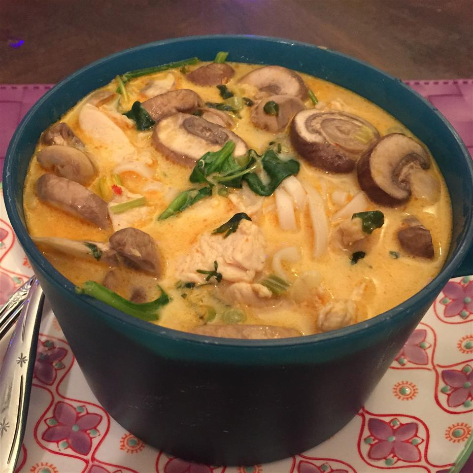

Thai Curry Soup

Definition
This delicious Thai-style soup has coconut milk, shrimp, mushrooms, and spinach. Chicken may be substituted for the shrimp; either way, I love this soup anytime!
Ingredients
- 2 ounces rice noodles (pad thai noodles)
- 1 tablespoon olive oil
- 1 clove garlic, minced
- 1 ½ tablespoons minced lemon grass
- 1 teaspoon ground ginger
- 2 teaspoons red curry paste
- 1 (32 ounce) carton chicken broth
- 2 tablespoons soy sauce
- 1 tablespoon white sugar
- 1 (13.5 ounce) can reduced-fat coconut milk
- ½ cup peeled and deveined medium shrimp
- ½ cup sliced mushrooms
- 1 (10 ounce) bag baby spinach leaves
- 2 tablespoons fresh lime juice
- ¼ cup chopped cilantro
- 2 green onions, thinly sliced
Steps
- Bring a large pot of lightly salted water to a boil. Add rice noodles and cook until al dente, about 3 minutes. Drain and rinse well with cold water to stop the cooking; set aside.
- Heat oil in a large saucepan over medium heat. Stir in garlic, lemon grass, and ginger; cook and stir until aromatic, 30 to 60 seconds. Add the curry paste, and cook 30 seconds more. Pour in about 1/2 cup of the chicken broth, and stir until the curry paste has dissolved, then pour in the remaining chicken stock along with the soy sauce and sugar. Bring to a boil, then reduce heat to medium-low, partially cover, and simmer 20 minutes.
- Stir in coconut milk, shrimp, mushrooms, spinach, lime juice, and cilantro. Increase heat to medium-high, and simmer until the shrimp turn pink and are no longer translucent, about 5 minutes.
- To serve, place some rice noodles into each serving bowl and ladle soup on top of them. Garnish each bowl with a sprinkle of sliced green onion.